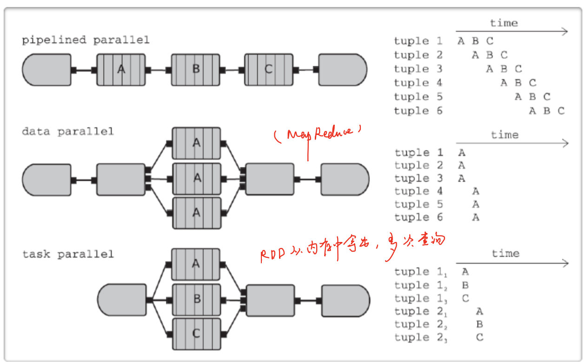
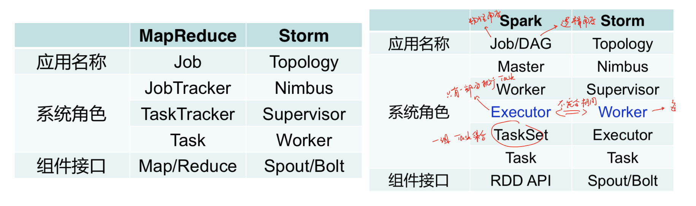

流计算系统
需求
静态数据 -> OLAP
流数据
- 数据快速持续到达
- 数据量大，但不十分关注存储
- 注重数据的整体价值，不过分关注个别数据
- 数据顺序颠倒，或者不完整，系统无法控制将要处理的新到达的数据元素的顺序
应用
- 实时广告更新
- 实时交通路况
概述
- 流计算特征
- 乱序：数据记录的原始顺序和在处理节点上的处理顺序可能不一致（数据传递也可能导致顺序改变）
- 延迟：数据记录的产生时间和在处理节点上的处理时间可能差别很大
- 无界：数据记录在计算过程中不断动态到达
- 基本概念
- State（状态）
- 两种算子
- stateless streaming process: filter / map
- stateful streaming process: wordcount/ groupbykey
- Processing Element（PEs）：基本的运算单元（函数）
- 接收并产生新数据
- 每个数据只能算一遍，不能倒回去
- Summary States：由于流计算不能存储所有数据，因此存放一个梗概（一种数据结构）
- 例如样本/直方图/状态机/平均数/方差
- 两种算子
- Window（窗口）
- Range：将多久的数据进行计算
- Trigger/Slide：每隔多久激发计算
- 滑动窗口：Range > Slide 每隔20个记录过去60个
- 滚动窗口： Range = Slide 每隔20个记录过去20个
- 跳跃窗口： Range < Slide 每隔60个记录过去20个
- Session Window：由于不知道开始时间和结束时间，很难用批处理的方式解决（在Session结束时断开）
- 自定义Window操作
- Window Assigner（Range）：负责将什么元素分配到不同的Window
- Trigger（Slide）：触发器
- Evictor（可选）：可以在触发器之后，计算之前移除某些数据
- Time（时间）
- Processing Time：在每个PE上处理的Local时间，系统可以把握
- Event Time：事件发生时间（更重要），确定时间，系统不能把握
- 可以无序的到达
- 在消息传递Kafka中可能导致交错
- 在不同PE进行shuffle时可能导致交错
- 如何根据Event time进行window操作呢？ Watermarks
- 可以无序的到达
- State（状态）
Low WaterMakes
表示所有数据都到达的一个时间点，表示系统可以确认该时间之前的数据全部已经收到并完成处理
- 系统任务lwm之前的数据全部已经收到并完成处理
Wall time：系统的当前当前时间，与Processing Time 是一样的
计算方式（若C是A的上流节点）
low watermark of A = min (oldest work of A , low watermark of C )
局限性
- 在一定程度上保证数据的完整性，时效性
- 无法完全避免数据比lwm晚到到达
- 比如数据在没有进入系统之前就延误了，lwm根本不得而知
- 不同系统处理方式不一样（超时机制）
Ingestion Time
- a hybrid between processing and event-time
- 当数据没有Event time时使用，记录进入系统的时间，用来模仿origin time
并行化
几种并行化的方式：

为什么需要并行化
- 数据的计算（process）跟不上数据的产生
- 状态（State）太大，不能存在一个节点（graph）
- 数据已经进行了partition（kafka）
Hadoop 与流计算
- 设计初衷是面向大规模数据批量处理，适合处理静态数据
- 可以使用小批量处理来降低批处理的时间延迟，但也无法有效处理流数据
- 如何处理片段之间的依赖关系（window跨batch，如何做？）
- 性能太差
Storm
Storm将流数据Stream描述成一个无限的 Tuple序列，这些Tuple序列会以分布式的方式并行地创建和处理
从逻辑上看，Storm的tuple类似于关系数据库中的tuple
- 这些字段是否需要存储？ 不需要，在开始之前就已经定下来了
系统构成
Spout
是Stream的源头，从外部数据元读取数据，然后封装成tuple形式，发送到stream中
- 是主动的角色
Bolt
描述stream的转化过程
- 是一个被动的角色
Topology
描述Spout和Bolts组成的网络
- 节点：Spout或者Bolt（描述处理逻辑）
- 边：Bolt订阅哪个Stream（数据流动方向）
系统架构
采用主从方式
- Nimbus：主节点运行的后台程序，负责分发代码，分配任务和检测故障
- Supervisor：从节点运行的后台程序
- 负责监听所在机器的工作，决定是否启动或运行Worker进程
- Zookeeper
- 负责Nimbus和Supervisor之间的所有协调工作（没有Zookeeper无法运行）
- 同时可以保证高可用（Nimbus进程或Supervisor终止，重启时也能读取恢复之前的状态）
- Worker（进程，与MapReduce更相似）
- 对Spout或Bolt运行一个或多个executor线程来提供task的运行服务
- executor：线程，执行同一个组建的一个或多个task
- task：实际数据处理（Spout/Blot）
Supervisor -> 多个worker（线程） -> 多个executor（线程）执行 task
storm与MapReduce/Spark的系统架构比较

工作流程
系统只负责Continous execution：
- 让系统运行
- 重新调度失败的worker
将状态（State）交给用户来管理，无论用户将State存在哪（外部数据库/堆栈）
工作流程
- 客户端Topology生成后，提交给Nimbus
- Nimbus创建一个configuration（一种作业的调度逻辑，将Topology分片成task），然后原子性的将task和supervisor相关信息写入zookeeper
- Supervisor会去Zookeeper上认领自己的Task，通知自己的Worker进程进行Task的处理
- worker启动，开始运行。
Stream Grouping
每一个Spout和bolt都可以是多个分布式task来执行，Stream Grouping用来决定task如何分发一组Tuple
ShuffleGrouping：随机分组，保证每个bolt的task接收tuple的数量大致一致（负载均衡）
FieldsGrouping：按照字段分组，将相同字段分到同一个Task中
AllGrouping：广播发送（信息会重复发送）
NonGrouping：不分组，当前Task的执行会和它的被订阅者在同一个线程中执行（优化时使用）
MessagePassing
Tuple处理完即可发送：无阻塞、符合实时计算要求
一次一记录：一次发送一个tuple
与批处理的不同点：
- MapReduce和Spark的shuffle阶段存在阻塞
- 数据传输是成块进行的
容错机制
Nimbus：使用zookeeper重启
Supervisor：使用zookeeper重启所有节点（重新调度）
Worker：Supervisor重启
- 重启之后怎么办？使用消息重放和消息应答机制
- 当每个bolt接收到数据时，会进行应答，回复成功（acknowledge）或者失败（fail）
- 问题，会重复计算（At least once）
Storm改进
制约原生native Storm容错机制的因素
- 无状态:中间结果无法重放
- 引入状态
- 一次一记录传输方式:元数据量太大
- 小批量传输
- 使用exactly-once semantic
Spark Streaming
使用一次一记录的方式存在的问题：
- 每个节点都是可修改的状态
- 对于每个记录，都需要更新状态和发送数据
- 若节点丢失，状态丢失/需要将状态进行容错
主要思想
- 将输入数据变为batches
- batch的大小很关键，太小的话效率不高，太大的话延迟很高
- 理想的大小：batch刚刚到达，之前的已经处理好了
- 对每个batch看成是RDD，对每个RDD的操作用来模拟continous execution
- batch的大小很关键，太小的话效率不高，太大的话延迟很高
- Micro - Batch
- 使用processing time来获得Micro - Batch
- DStream：一系列RDD
- DStream将输入数据流进行切割（根据用户指定的时间间隔）
- 维护一系列RDD的信息
- 大部分操作与RDD类似
体系架构
- 在Spark Streaming中，会有一个组件Receiver，作为一个长期运行的task跑在一个Executor上
- Input DStream: 从外部数据源获得的流数据的抽象表示 (例如从文件中读取数据的文件流，套接字流，或者从Kafka中读取的输入流等)
- 每个Receiver都会负责一个Input DStream，从而与外部数据源进行连接，读取相关数据
工作流程
- Reciever
- 实现从数据源读取数据的逻辑（接收到Spark系统中）
- 负责将读取到的数据存储到Spark的内存中
- Input DStream
- 表示从数据源读取数据的DStream
- 关联一个Reciever
- 分发到executors上并长时间执行
DStream
- 状态（State）
- UpdateStateByKey: 允许用户维护任意的状态信息，并根据新数据更新状态
- Transformation：与Spark一样
- 窗口
- 用户可以指定窗口时间间隔/大小
- Dstream窗口操作优化
- reduceByKeyAndWindow 通过提供的invFunc提供流数据“逆操作”，从而达到更高的效率
- 适用范围：滑动式窗口，slide < range，优化重复计算部分的操作
- 增量式窗口操作：上一时刻的值 - 没有的部分 + 新增的部分
- 时间
- 采用processing time
容错
worker：
- RDD可以复制到多个节点中的内存
- 所有的transform操作都是容错的，有exactly-once语义
master：
- 保存DStreams的状态到一个检查点文件（保存到HDFS），用来恢复
KEYS
流计算系统概述
- 流计算基本特征及应用
- 流计算的三大基本概念
- 流计算窗口类型
- lwm
- 概念，计算
- 局限性
- ingestion time
- 两种流计算中常见的优化
- 父子节点放在一起(Producer-Consumer Fusion)
- 兄弟节点放在一起(Siblings Fusion)
Storm
- Storm里面的topology可以是环状图
- spout是主动拉去数据/Bolt是被动的角色
- tuple中的字段是否需要存储？
- Continuous exectuin & continous query（SQL）
- Storm中的系统架构，与hadoop/spark对比，Worker是进程还是线程？
- Storm的工作流程（zookeeper发挥的作用：充当了任务调度）
- 在Storm中，没有zookeeper无法运行
- StreamGrouping的方式
- Storm的消息传递方式，与批处理的不同点（2点），重要
- Storm的容错机制以及at least once
- 在Storm中，每一个worker都执行executor，但在Spark中，Executor中的一部分用来执行task？
Spark Streaming
- Micro-Batch的time是什么？
- Reciever和Input DStream的区别
- DStream时间/窗口/状态
- SparkStreaming是exactly once吗？